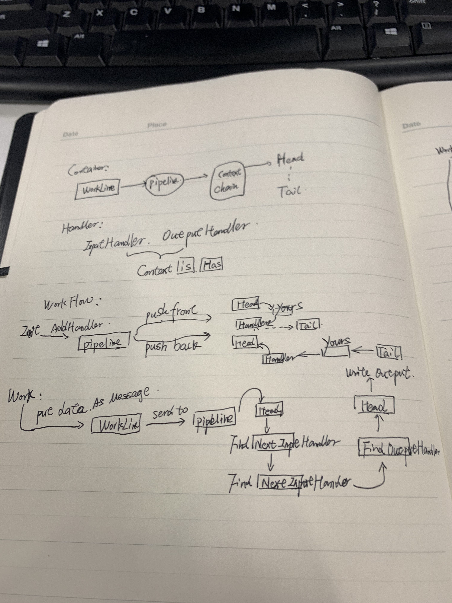

仿照 NETTY 写一个 Workline
起
netty 的 pipeline 真的写得很棒！我们不光要点赞，还要在实际中应用它。所以我仿照它写了一个 workline。下面是结构和流程图。

FIRST
首先，要有 pipeline 的定义public interface IWorkPipeline
{
void PushFront(IWorkHandler workHandler);
void PushBack(IWorkHandler workHandler);
void Input(object msg);
}
其中 IWorkHandler 是处理业务的具体执行者。public interface IWorkHandler
{
void OnAdd(IWorkContext workContext);
void OnRemove(IWorkContext workContext);
}
public interface IWorkInputHandler : IWorkHandler
{
void HandleInput(IWorkContext workContext, object prevInput);
}
public interface IWorkOutputHandler:IWorkHandler
{
void HandleOutput(IWorkContext workContext, object prevOutput);
}
AND
然后用 workline 把 pipeline 包裹i起来。internal class WorkLine : IWorkLine
{
private IWorkOutputReceiver outputReceiver;
private IWorkPipeline workPipeline;
internal IWorkPipeline Pipeline => workPipeline;
internal WorkLine()
:this(null)
{
}
internal WorkLine(IWorkOutputReceiver outputReceiver)
{
this.outputReceiver = outputReceiver;
workPipeline = new WorkPipeline(outputReceiver);
}
void IWorkLine.Input(object msg)
{
workPipeline.Input(msg);
}
}
ok, 事情成功了一半。 接下来就写上实现类。
AND
和 netty 的 pipeline 一样， 我们采用 Context 来形成业务流水线。internal class WorkPipeline : IWorkPipeline
{
HeadContext head = null;
TailContext tail = null;
internal WorkPipeline(IWorkOutputReceiver workOutputReceiver)
{
head = new HeadContext(this, workOutputReceiver);
tail = new TailContext(this);
head.Next = tail;
tail.Prev = head;
}
void IWorkPipeline.Input(object msg)
{
(head as IWorkInputHandler).HandleInput(head, msg);
}
}
注意，netty 的天然 output 是 socket，而我们没有，所有要用 IWorkOutputReceiver 来代替。
HeadContext 和 TailContext 组成了循环链表。他们同样继承自 AbstractWorkContext。 在 pipeline 中插入 handler 其实就是插入一个 AbstractWorkContext。void IWorkPipeline.PushBack(IWorkHandler workHandler)
{
var ctx = new DefaultPipelineWorkContext(this, workHandler);
AbstractWorkContext prev = tail.Prev;
tail.Prev = ctx;
ctx.Next = tail;
prev.Next = ctx;
ctx.Prev = prev;
}
void IWorkPipeline.PushFront(IWorkHandler workHandler)
{
var ctx = new DefaultPipelineWorkContext(this, workHandler);
AbstractWorkContext next = head.Next;
head.Next = ctx;
ctx.Prev = head;
ctx.Next = next;
next.Prev = ctx;
}
AND
下面来看看重头戏 AbstractWorkContextpublic interface IWorkContext
{
void FireInput(object msg);
void FireOutput(object msg);
}
internal abstract class AbstractWorkContext : IWorkContext |
FIN
HeadContext 和 TailContext 分别站在数据流的头尾两端internal class HeadContext : AbstractWorkContext, IWorkInputHandler, WorkOutputHandler
{
internal override IWorkHandler Handler()
{
return this;
}
void IWorkInputHandler.HandleInput(IWorkContext workContext, object prevInput)
{
workContext.FireInput(prevInput);
}
void IWorkOutputHandler.HandleOutput(IWorkContext workContext, object prevOutput)
{
workOutputReceiver?.Receive(prevOutput);
}
}
internal class TailContext : AbstractWorkContext, IWorkInputHandler
{
internal override IWorkHandler Handler()
{
return this;
}
void IWorkInputHandler.HandleInput(IWorkContext workContext, object prevInput)
{
throw new UnHandledMessageException("no message input handler configured");
}
}
好了，大功告成。
USE
来看看怎么使用。以生成图片为例：var workline = new WorkLineBoot()
.Init(pipeline =>
{
// output
pipeline.PushFront(new ImageBytesWrapper());
pipeline.PushFront(new CookiesWrapper());
// input
pipeline.PushBack(new CodeMakerWrapper(new CodeMaker()));
pipeline.PushBack(new CodeSaverWrapper(new CodeSaver(redis)));
pipeline.PushBack(new ImageMakerWrapper(new ImageMaker()));
})
.Boot();
这里的各种 wrapper 分别继承了 IWorkOutputHandler， IWorkInputHandler。各自的功能划分得很清楚，流水处理，perfect！